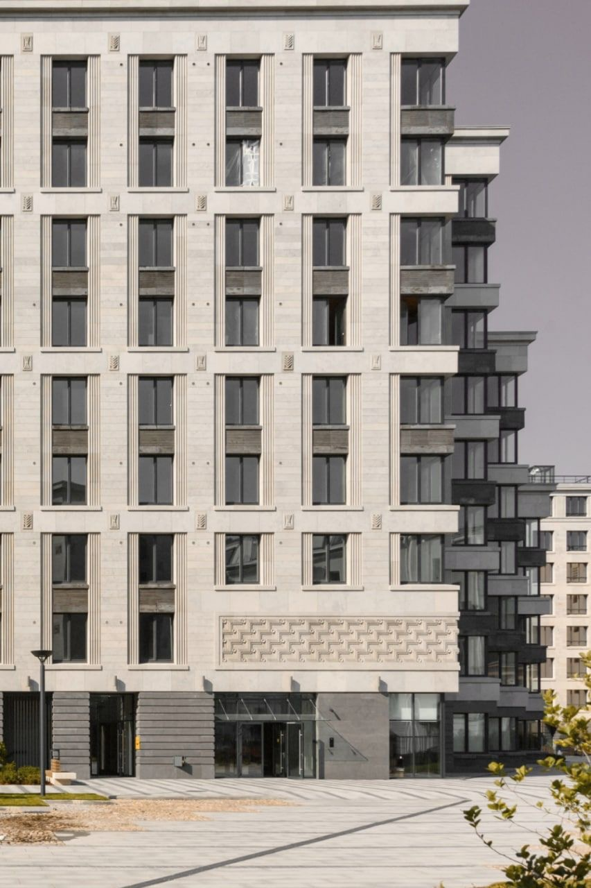

Услуги и решения FS
Подберём систему водоочистки под ваш объект — от квартиры и частного дома до жилого комплекса. Ниже — ключевые сценарии и состав решения.
Фильтрационные системы для частных домов
Автономные решения для коттеджей и загородных домов. Стабильная работа при перепадах качества воды, защита сантехники и бытовой техники.
- Грубая очистка, сорбция, мембрана, минерализация, УФ
- Мониторинг и удалённые уведомления
- Индивидуальная обвязка под котельную
Системы водоочистки для девелоперов
Комплексные станции для МКД и кварталов. Масштабируемая архитектура, учёт пиковых нагрузок и проектных норм.
- Модульные блоки и резервирование
- SCADA/телеметрия, API для УК
- Инжиниринг, шефмонтаж и сервис


Индивидуальные решения для квартир
Компактные фильтры под мойку и магистральные системы. Учитываем анализ воды и желаемый вкус (минерализация).
- Быстрый монтаж
- Подписка на обслуживание
- Фильтр-кран или отдельный кран
Сервис и обслуживание
Регламентные работы и замена расходников по графику. Сохраняем эффективность системы и качество воды на всём сроке эксплуатации.
- Плановые визиты и журнал работ
- Оригинальные расходники и гарантия
- Экстренные выезды — 24/7

Нужен проект под ваш объект?
Пришлите планировку или ТЗ — соберём конфигурацию, рассчитаем гидравлику и предложим варианты по бюджету.
Связаться